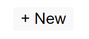
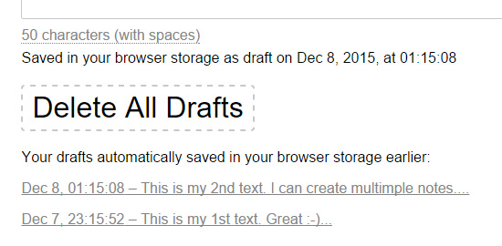
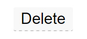
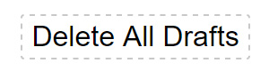
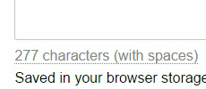

– Works online in a web browser.
– 100% Free online tool.
– No login required, no sign up required.
– Auto save your text (as a draft).
– Multi-Page.
– Drafts management.
– Characters and words counter.
– A simple web interface.
JustNotepad.com is a free online notepad in your web browser. With JustNotepad.com you can create any text notes (ideas, to-do list, links, or any other plain text) that you would like to write just via web interface without leaving a browser.
– Works online in a web browser.
– 100% Free online tool.
– No login required, no sign up required.
– Auto save your text (as a draft).
– Multi-Page.
– Drafts management.
– Characters and words counter.
– A simple web interface.
This simple online notepad has AutoSave feature and allows you to restore your text “as a draft” even if you have closed your web browser/window or browser tab (if it is technologically possible and is supported by a web browser). Therefore, you can easily return to your text notes anytime.
JustNotepad.com allows you to create multiple drafts (pages).
To create a new text (draft) just press the “+ New” button at the top of the web interface. It will open a new browser tab.
Next, go to the new browser tab to begin writing a new text. It allows you to use additional functionality of your web browser using several open “browser tabs” to use each draft (text) in a separate “browser tab”.

You can always switch between all your drafts.
The list of all your drafts is available below the text area, at any time and for your device only. Each draft (in the drafts list) has a “last modification date” to easily identify draft.

To delete your current text (which is displayed in the text area) just press the “Delete” button at the top of the web interface.

To delete all your drafts completely (including the current text in the text area) – just press the “Delete All Drafts” button (which is available below the text area).

Online notepad automatically counts characters and words as you type, below the text area.
“Characters counter” is displayed by default. If you want to count words, just press the counter to switch to the “words counter”.
